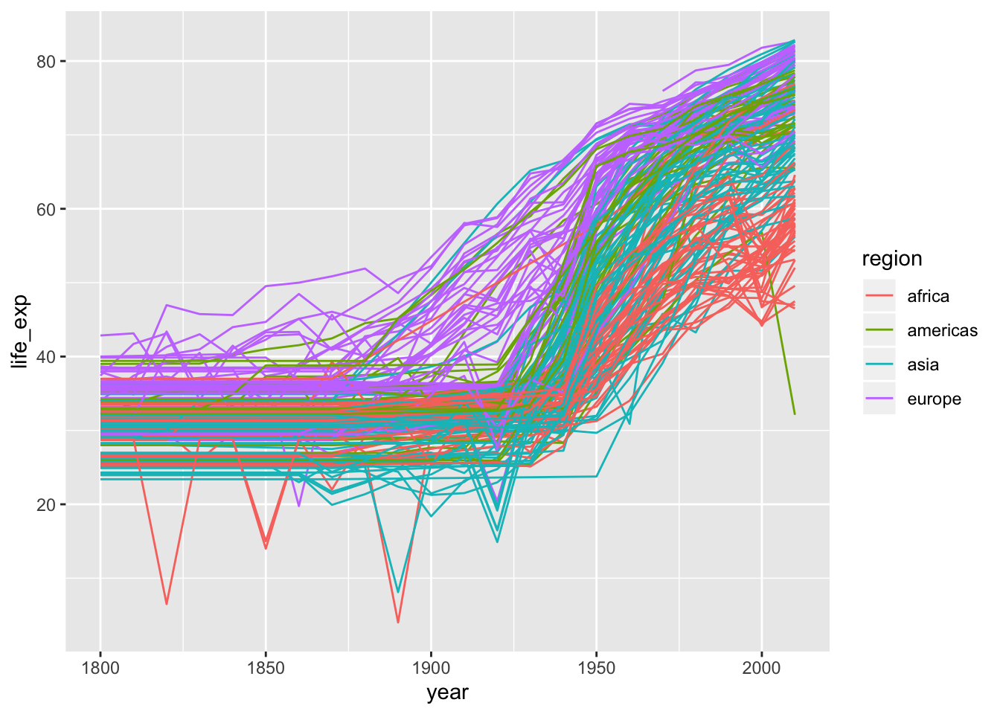
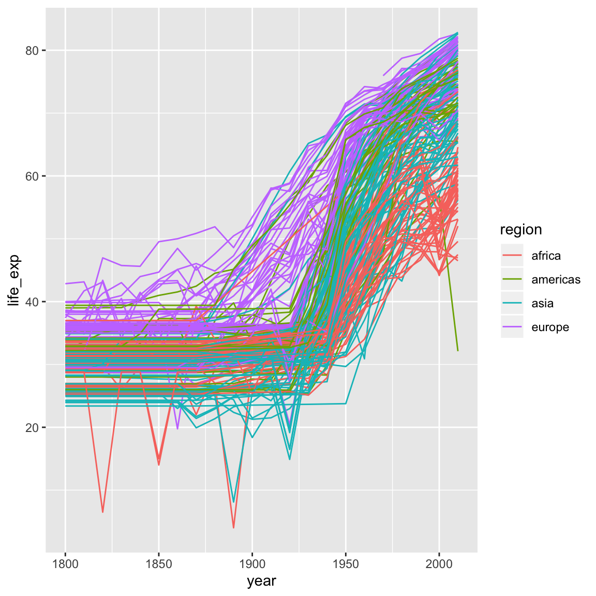

6 R Markdown
6.1 Introduction to markdown
Markdown is a powerful “language” for writing different kinds of documents, such as PDF or HTML in an efficient way, but markdown documents can also be published as is. The underlying idea for then markdown is that it is easy-to-write and easy-to-read.
You can use any text editor to write your markdown. RStudio already has inbuilt text editor and because it also has a few additional things that make markdown writing much easier we are going to use it’s text editor.
There are a few different flavours of markdown around. I’m going to mention a few but only focus on one, R Markdown
R markdown like most other flavours builds on top of standard markdown. It has some R language specific features as well as bunch of general enhancers to markdown. When R Markdown is coupled with Rstudio it creates a powerfull means of documenting your work while you are doing it, which you can then share with colleagues and the public in rapid and clean way.
Let’s get right into it. Open R Markdown file using these drop down menu steps: File -> New File -> R Markdown. You can put any title and any author name. For now select Document and Document type HTML. Once you have opened your .Rmd file, click on the Knit HTML button at the top of your pane.
Knitr is an R package that does all the magic of converting and running your R markdown and R code respectively.
These are three main parts to any R markdown document
- YAML header section (will talk about it at the very end)
---
title: "Hello world"
author: "Kirill"
date: "13 July 2016"
output: html_document
---- The R code blocks section
```{r}
plot(pressure)
```- Everything else is plain old markdown
# Have I been Marked Down6.2 Document types
There are numerous document types that you can turn your markdown into. This all depends on the tool, markdown compiler, but for Rstudio at least these a few that a supported.
6.2.0.1 Documents
html_notebook- Interactive R Notebookshtml_document- HTML document w/ Bootstrap CSSpdf_document- PDF document (via LaTeX template)word_document- Microsoft Word document (docx)
6.2.0.2 Presentations (slides)
ioslides_presentation- HTML presentation with ioslides
6.2.0.3 More
tufte::tufte_handout- PDF handouts in the style of Edward Tuftetufte::tufte_html- HTML handouts in the style of Edward Tuftetufte::tufte_book- PDF books in the style of Edward Tufte
We are not going to cover all of them, we are mainly going to be working with either html_notebook (new way) or html_document both produce very similar result, and essentially the personal preference. I’ll try to touch on ioslides_presentaion towards the end.
6.3 Vanilla Markdown
There’s actually not that much to core (vanilla) markdown. Essentially all of it can be summarised below:
# Header1
## Header2
### Header3
Paragraphs are separated
by a blank line.
Two spaces at the end of a line
produces a line break.
Text attributes _italic_,
**bold**, `monospace`.
Horizontal rule:
---
Bullet list:
* apples
* oranges
* pears
Numbered list:
1. wash
2. rinse
3. repeat
A [link](http://example.com).

> Markdown uses email-style
> characters for blockquoting.Which produces:
Header1
Header2
Header3
Paragraphs are separated by a blank line.
Two spaces at the end of a line
produces a line break.Text attributes italic, bold,
monospace.Horizontal rule:
Bullet list:
- apples
- oranges
- pears
Numbered list:
- wash
- rinse
- repeat
A link.
Markdown uses email-style > characters for blockquoting.
Whenever I need a refresher on markdown basics, I use this cheatsheet.
6.3.1 Practice vanilla markdown
Now it’s just a matter of learning some of the markdown syntax. Let’s delete all current text from the opened document except the YAML header and type this new text in Hello world, I'm learning R markdown! and pressing the Knit HTML button.
Hello world, I'm learning R markdown!Not much happened. This is because we didn’t mark our text in any way. You can put as much text as you want and it will appear as is, unless “specially” marked to look differently.
Now add the # symbol at the start of the line and press the Knit HTML button again. We’ll be pressing this button a lot! For those who like keyboard short cuts use ctrl+shift+k instead.
# Hello world, I'm learning R markdown!How about now? A single hash symbol made it whole lot bigger didn’t it? We’ve marked this whole line to be the header line.
Now make three new lines with the same text, but different numbers of # symbols, one, two and three respectively and keep pressing the Knit HTML button
### Hello world, I'm learning R markdown!
## Hello world, I'm learning R markdown!
# Hello world, I'm learning R markdown!This is how you can specify different headers type using markdown.
Let’s now practice making very short document in markdown with a main topic section and two subsections. We will add short sentences in each section. We will start with main section header and a quote. Let’s type the following text and knit our document.
# Learning Markdown
> I'm still learningNow let’s add three bullet points summarising what we are going to learn next and then knit the document again.
# Learning Markdown
> I'm still learning
Here I'll be learning:
- markdown
- R Markdown
- ggplot2Now let’s add each one of those bullet items as a subsection to the main “Learning Markdown” section.We are going to use ## to mark subsections and don’t forget to knit again.
# Learning Markdown
> I'm still learning
Here I'll be learning:
- markdown
- R Markdown
- git and github
## Markdown
## R Markdown
## ggplot2Now let’s add a sentence to each section, briefly describing what they are.
# Learning Markdown
> I'm still learning
Here I'll be learning:
- markdown
- R Markdown
- git and github
## Markdown
Here I'll learng vanilla markdown
## R Markdown
Whereas here I'll be learning R Markdown
## ggplot2
And this section is about plottingLet’s add a emphasis to some of the words in our document. We are going to add italic emphasis to the word “vanilla” and we are going to add bold emphasis to the capital letter “R” in the word R Markdown. You’ll need to knit your document still.
# Learning Markdown
> I'm still learning
Here I'll be learning:
- markdown
- R Markdown
- git and github
## Markdown
Here I'll learng _vanilla_ markdown
## R Markdown
Whereas here I'll be learning R Markdown
## ggplot2
And this section is about plottingRemember that vanilla markdown is comprised entirely of punctuation characters.
6.4 R Markdown
The reason that we are learning R Markdown is because it gives us a very straightforward way of writing plain text documents with inline R code that will become a very sophisticated document types. The bonus points also come from the fact that R Markdown files are easy to version control (git) and see the difference between versions.
This approach of interleaving analysis code, commentary and description is very explicit, which has direct implication in reproducibility, shareability and collaboration.
6.4.1 Embedding R code
An R chunk is a “special” block within the document that will be read and evaluated by knitr, ultimately converting everything into plain markdown. But for us it means that we can focus on our analysis and embed R code without having to worry about it. Additionally there are large number of chunk options that helps with different aspects of the document including code decoration and evaluation, results and plots rendering and display.
This is how an R code chunk looks like. If you want to include code into your documents it has to be via R chunks. You can further customise the appearance of your code in the final document with chunk options.
```{r}
```The little r there specifies the “engine”, basically telling R Markdown how to evaluate the code inside the chunk. Here we are saying use R engine (language) to evaluate the code. The list of languages is rather long, R Markdown can span a much greater area then one might think. In this workshop we are only going to focus on R language.
Let’s write our first bit of R code inside the R Markdown document. First we need to start a new R chunk, which we can be done in these ways:
- simply type it out
- press insert button at the top of the window
ctrl+alt+i
Let’s return to our document with the main header section Learning R Markdown. Now let’s add simple R code to our chunk, type the following code a <- "Hello world, I'm learning R Markdown !" and press knitr button to build html document. Note that as mentioned above we need to use print() statement to get the content of the variable to the scree/final document.
```{r}
a <- 'Hello world, I'm learning R Markdown !'
print(a)
```Tip: each chunk can be run independently in the console by pressing ctrl^enter or little green arrow.
6.4.2 Chunk Options
We can tweak many things about your output using different options that we can include inside curly brackets e.g
```{r chunk_options, more_chunk_options...}
```The two rather common options are echo=TRUE and eval=TRUE, both by default are set to true and this is why we didn’t have to pass them in previously.
echomeans show what has been typed in i.e show the code in the final documentevalmeans evaluate or execute that code
Sometimes we might want to show the code, but not execute it and other times we might just want to execute it and get the results without actually bore audience with the code.
Let’s try both of these options one at a time. We start with passing echo=FALSE options first
```{r, echo = FALSE}
print("Hello world, I'm learning R Markdown")
```Okay, we shouldn’t see our original print() statement in the output document. And now let’s pass eval=FALSE options instead
```{r eval = FALSE}
print("Hello world, I'm learning R markdown !")
```And now we should only see the result of the print() statement and no output.
Here is a nice reference that has comprehensive cover of all the options you can pass in.
Let’s now try a different example and use the gapminder dataset from the ggplot2 segment for this next example.
```{r}
library(tidyverse)
geo <- readr::read_csv('r-intro-files/geo.csv')
gap <- read_csv('r-intro-files/gap-minder.csv')
gap_geo <- left_join(gap, geo, by='name')
head(gap_geo)
```library(tidyverse)
geo <- read_csv("r-intro-files/geo.csv")
gap <- read_csv("r-intro-files/gap-minder.csv")
gap_geo <- left_join(gap, geo, by="name")
head(gap_geo)## # A tibble: 6 x 11
## name year population gdp_percap life_exp region oecd g77 lat long
## <chr> <dbl> <dbl> <dbl> <dbl> <chr> <lgl> <lgl> <dbl> <dbl>
## 1 Afgh… 1800 3280000 603 28.2 asia FALSE TRUE 33 66
## 2 Alba… 1800 410445 667 35.4 europe FALSE FALSE 41 20
## 3 Alge… 1800 2503218 715 28.8 africa FALSE TRUE 28 3
## 4 Ando… 1800 2654 1197 NA europe FALSE FALSE 42.5 1.52
## 5 Ango… 1800 1567028 618 27.0 africa FALSE TRUE -12.5 18.5
## 6 Anti… 1800 37000 757 33.5 ameri… FALSE TRUE 17.0 -61.8
## # … with 1 more variable: income2017 <chr>This table is a bit ugly to look at in your final document. We’ll come back to data-frame printing later in the YAML section.
Note: you might be thinking that you’ve already run library(tidyverse) previously in the session and that you already have tidyverse packages loaded, you shouldn’t need to run the command again. When you knit a document, it ignores the state of your RStudio session and runs through the code from start to finish. If your code points to missing files or uses packages that haven’t been explicitly loaded somewhere in the document, it will fail to render your document.
Remember: You can go between R Markdown and console, to check your code, at any time. You should see your code block is highlighted differently and you should see a green arrow at the right hand site of that block. Press the green arrow to get an output in the console. You can also use ctrl+enter to do the same with the keyboard short cut.
How about little data exploration? From the ggplot2 segment, we can include some plots into our html document, rather than saving the plots to file, moving the plots off the server onto our local computer, then manually including them into a document.
```{r}
ggplot(gap_geo, aes(x=year, y=life_exp, group=name, color=region)) +
geom_line()
```## Warning: Removed 205 rows containing missing values (geom_path).
Here is a perfect example where we can hide our code from the viewer, since it isn’t most interesting bit about this data. Let’s turn echo=FALSE options for all our plots below. We also don’t want to get that warning message included in the final document, so we can also include warning=FALSE.
Figure alignment can be done with fig.align options e.g {r fig.align=default} . default means what ever your style sheet has. The other options are, “left”, “center” and “right”. let’s try one out.
```{r echo = FALSE, fig.align = 'right', warning=FALSE}
ggplot(gap_geo, aes(x=year, y=life_exp, group=name, color=region)) +
geom_line()
```Remember that you can you always execute code in the console by pressing “green arrow” or using keyborad short cut ctrl+enter
We now know how to align figure to where we want, how about changing the size of it? We can do that with fig.height and fig.width, the units are inches. Let’s make 4 X 4 inches figure e.g {r fig.height=6, fig.width=6} . and also align the figure to the center
```{r echo = FALSE, fig.align = 'center', warning=FALSE, fig.height=6, fig.width=6}
ggplot(gap_geo, aes(x=year, y=life_exp, group=name, color=region)) +
geom_line()
```
One last thing we’d like to share with you is how to add a figure legend or a caption - with fig.cap of course e.g {r, fig.cap="This is my legend"} . Go ahead and add a figure description.
```{r echo = FALSE, fig.align = 'center', warning=FALSE, fig.height=6, fig.width=6, fig.cap='This figure illustrates the life expectancy from 1800 to 2000 by region.'}
ggplot(gap_geo, aes(x=year, y=life_exp, group=name, color=region)) +
geom_line()
```Figure 6.1: This figure illustrates the life expectancy from 1800 to 2000 by region.
Note that the figure legend follows the same alignment as the figure itself.
There are more chunk options which we encourage you to explore in greater depth in the R Markdown documentation. We have only examined a handful of figure specific options but there are many more options that allow fine control over the behavior of the code and cosmetics of the document.
Lastly, we’ll mention that the engine option can be used to specficy different language types. So you can embed python, BASH, Javascript and a heap of other languages all within the same document.
6.5 YAML header
At the very top of your .Rmd file you can, optionaly, include a YAML block. In this block you can fine turn your output document, add some metadata and change the document’s font and theme. You can also pass additional files such as stylesheet file .css and bibliography file .bib for text citation. We’re only going to show you a few possible options and will let you explore the rest on your own.
Navigate to the top of your .Rmd document and find the YAML section there. Just like with the options we passed in to manipulate R code block, YAML block also has key = value pairs, but instead they are separated by colon ( : ). Now let’s add table of content to our document, this will make it easier to navigate your page as well as give nice over view of the content our key is toc with value true or yes which one you prefer better.
---
title: "Hello world"
author: "Kirill"
date: "13 July 2016"
output:
html_document:
toc: true
---Note that you need to bring html_document onto new line and indent it with two spaces. html_document is a value of output key. output can have other values e.g pdf_document, word_document. However html_document also becomes a key for toc value and toc becames a key for its own value.
Now that we have sort out the initial YAML layout, we can continue adding more options to style our HTML document. The other two useful options that I like to pass in are toc_depth and number_sections
---
title: "Hello world"
author: "Kirill"
date: "13 July 2016"
output:
html_document:
toc: true
toc_depth: 4
number_sections: yes
---Most of those options are self explanatory. The best way to learn what each does, is to pass them in. Note that you can comment lines out inside YAML section with # symbol.
Another two options that can change your document apperance are theme and highlight. There are number of different themes and highlight options. I suggest you find the one you like in your own time.
Remember when we printed the gap_geo, the table rendered wasn’t particularly nice to look at? We can control the behavior of tables in html documents in the YAML header. There are a number of options to select one from and pass to df_print.
Try out paged.
---
output:
html_document:
toc: true
toc_depth: 4
df_print: paged
---6.6 Alternate Formats
As I mentioned in previous section, output has many options, one of which is ioslides_presentation. You can simple add
---
output: ioslides_presentation
---at the top of your document and your .Rmd files will be complied to slide presentation instead.
Another way to start with an ioslides_presentation is select presentation options when you were opening R markdown file. Either way you’ll notice YAML header reflects your selected output type.
Let’s open new R markdown document and let’s select presentation instead and let’s select HTML (ioslides) option there. You can still save your files as .Rmd, and then press the the Knit HTML button.
The syntax for the document is more or less the same, except ## is now used to mark new slide.
ioslides are fairly basic in terms of slideshow presentations. If you find yourself frustrated with the limitations of ioslides, there are a number of official format options, we haven’t had much experience with using them. I’ve been using the xaringan package, which isn’t an official R Markdown format but I’ve found it to be quite powerful, though requires a fair degree of familiarity with R Markdown/HTMl/CSS.
Another thing to note is that different document formats will have specific YAML options and markdown syntax. The more specific syntax used, the harder it is to swap a document from one format to another. For example, you can generate a very detailed and customised PDFs from an R Markdown document with heavy usage of LaTex. However, LaTex will not be rendered in a HTML document. So it’s important to have an idea of how the final document will be used as you work through it.
6.7 Extras
For a more in-depth R-Markdown tutorial, we recommend:
- R Markdown: The Definitive Guide
- bookdown: Authoring Books and Technical Documents with R Markdown - the bookdown package greatly extends R Markdown
- R for Reproducible Research - a workshop delivered by the Monash Bioinformatics Platform focused on R Markdown and reproducible workflows with git.
6.7.1 Code chunk names
You can name code chunks! In your R-Studio session this even adds a little table of contents in the bottom left of your source panel that lets you navigate your R Markdown document via headers and code chunk names.
6.7.2 Cross-referencing
Let’s learn how to add external and internal links to your document, remember the syntax for adding links is [DESCRIPTION](link-address). The external link that we are going to add is going to be this https://rmarkdown.rstudio.com/. Each one of the bullet points above going to become a link to it section. The way you reference internal section is by starting your address with a # symbol then simply using all lower case letters for the section name and all spaces need to be converted to a dash symbol -. Let’s add those things in and re-build our document.
# Learning Markdown
> I'm still learning
[External resource](https://rmarkdown.rstudio.com/)
Here I'll be learning:
- [markdown](#markdown)
- [R Markdown](#R Markdown)
- [git and github](#git-and-github)
## Markdown
Here I'll learng _vanilla_ markdown
## R Markdown
Whereas here I'll be learning **R**markdown
## ggplot2
And this section is about plottingA bonus exercise is to add logos to each sections. Search internet for:
- Markdown logo, and add the image using
syntax - R Markdown logo, and add the image using
syntax - Git logo, and add the image using
syntax - ggplot2 logo, and add the image using
syntax
Note for the external resource that is on internet the address must start with www or https otherwise address will be interpreted as file path.